Ganzglasgeländer für Terrassen · Österreichweit
Klare Kante für Ihre Terrasse.
Aufmaß, Fertigung, Lieferung und Montage von Glasgeländern — aus einer Hand. Wir sind in ganz Österreich für Sie unterwegs, von Wien aus.
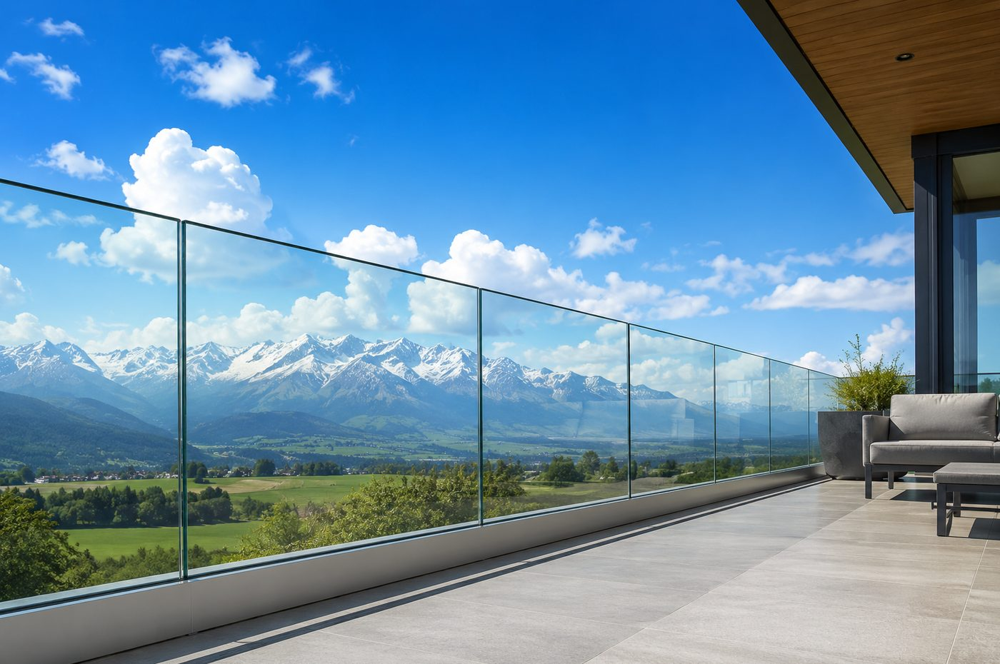
Preisrechner
Richtpreis in 30 Sekunden — ohne Kontaktdaten, ohne Wartezeit.
Unser Ablauf
Vom Aufmaß bis zur fertigen Montage
Ein Ansprechpartner für den gesamten Prozess — keine Abstimmung zwischen mehreren Firmen nötig.
Aufmaß
Wir vermessen Ihre Terrasse vor Ort und beraten Sie zu Glasfarbe, Glasart und Beschlag.
Fertigung
Jedes Element wird passgenau nach Maß gefertigt — kein Standardformat.
Lieferung
Sichere Anlieferung Ihres Glasgeländers an jeden Ort in Österreich.
Montage
Fachgerechte Montage durch unser Team — sauber, sicher, termintreu.
Auswahl
7 Glasfarben für jeden Stil
Vom komplett unsichtbaren Geländer bis zum kräftigen Farbton — Sie entscheiden.
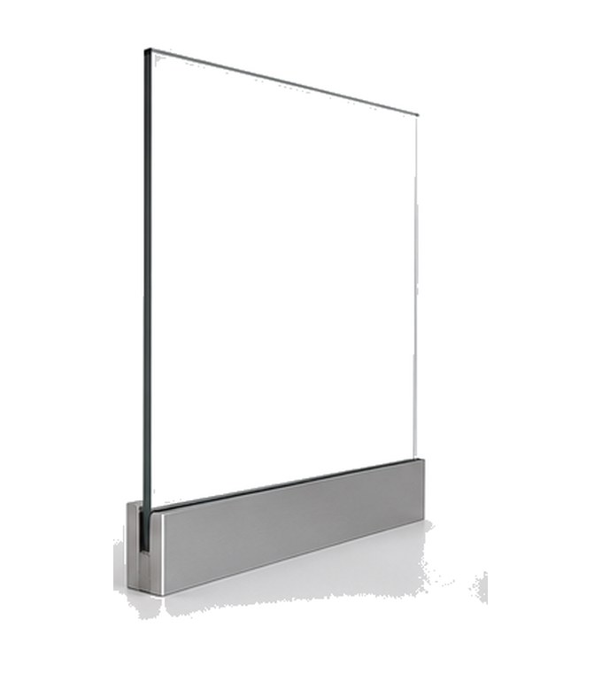
Klar
Klassisch transparent, unauffällig.
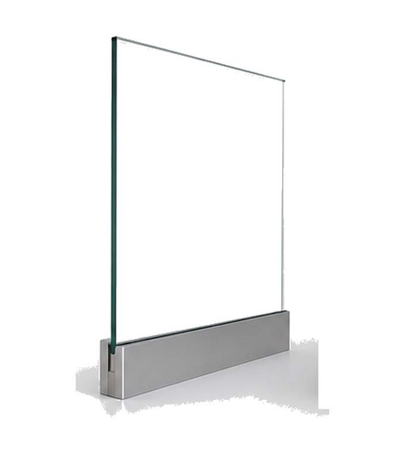
Extraklar
Eisenarm, maximal transparent, ohne Grünstich.
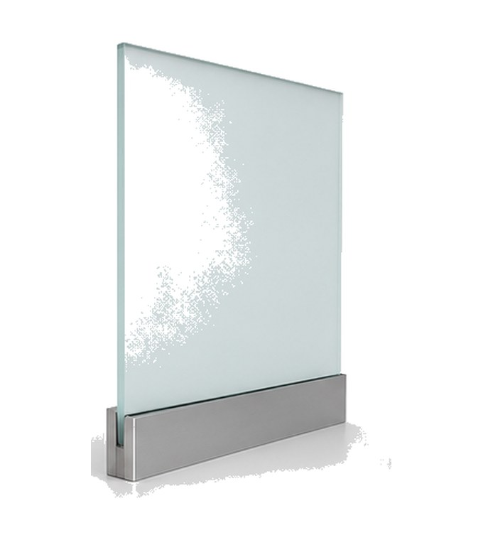
Satiniert
Blickdicht mattiert, für mehr Privatsphäre.
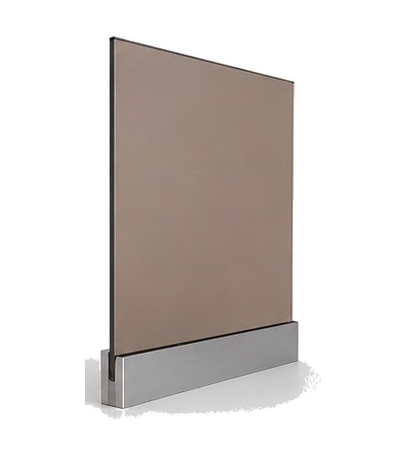
Bronze
Warmer Ton, reduziert Blendung.
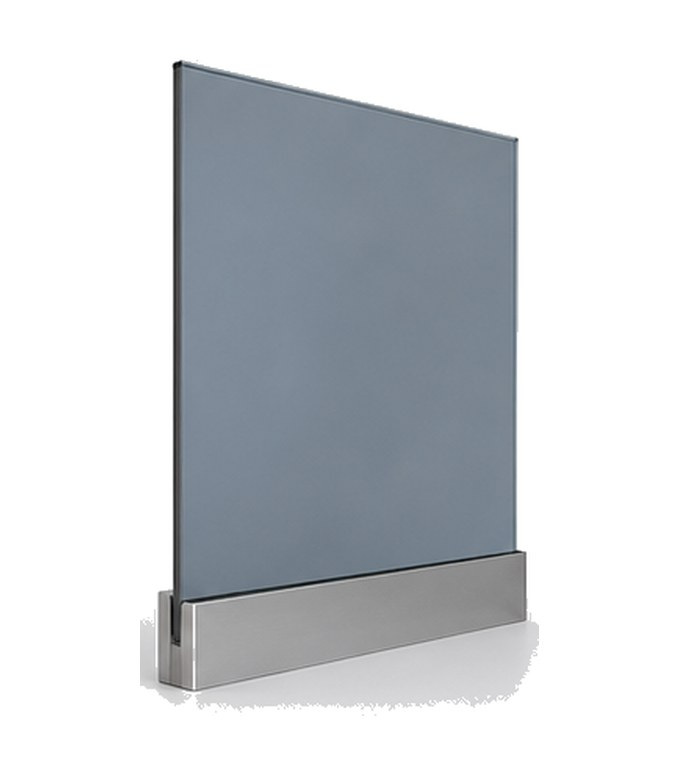
Grau
Rauchgrau — dezent abdunkelnd, moderner Look.
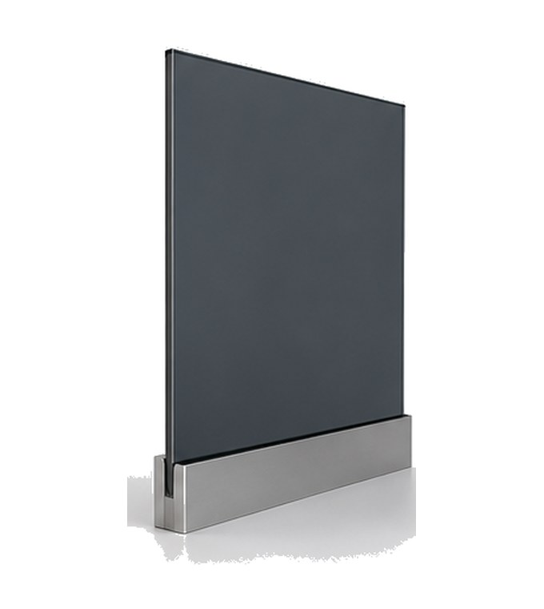
Anthrazit
Kräftiger, moderner Farbton mit sehr gutem Sichtschutz.
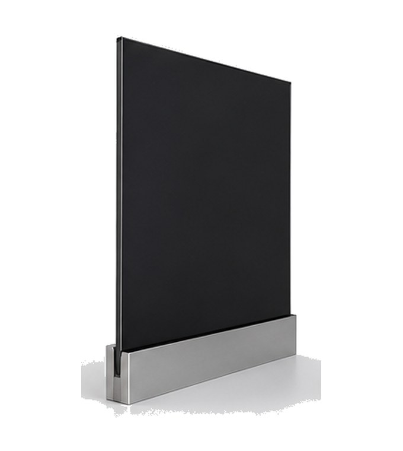
Schwarz
Tiefes Schwarz — maximaler Sichtschutz.
Sicherheit
Zwei geprüfte Glasarten
Für absturzsichernde Verglasungen ist in der Regel VSG erforderlich — wir beraten Sie zur passenden, normgerechten Wahl. Mehr zu Glas & Sicherheit →
Einscheiben-Sicherheitsglas
- Thermisch vorgespannt, sehr hohe Bruchfestigkeit
- Zerfällt bei Bruch in kleine, stumpfe Krümel
- Wirtschaftliche Lösung für die meisten Terrassen
- Stärken: 6, 8, 10 oder 12 mm — je nach Scheibengröße
Verbund-Sicherheitsglas (Triplex)
- Mehrere Scheiben mit reißfester Folie verbunden
- Bleibt bei Bruch in der Folie haften — kein Herausfallen
- Empfohlen für erhöhte Absturzhöhen und mehr Sicherheit
- Stärken: von 6+6 bis 12+12 mm — je nach Scheibengröße
Befestigung
Beschläge & Modelle
Von der klaren, pfostenlosen Linie bis zur robusten Glasstütze — verschiedene Modelle, jeweils in mehreren Oberflächen (Silber, Schwarz, Gold …).
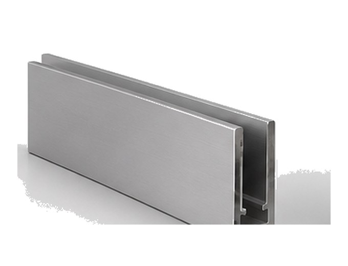
Klemmprofil
Durchgehendes Bodenprofil ohne sichtbare Pfosten — für eine klare, moderne Linie.
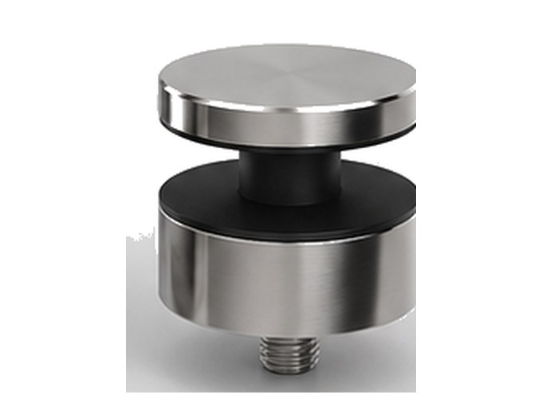
Punkthalter
Punktuelle Halterungen für eine besonders reduzierte, filigrane Optik.
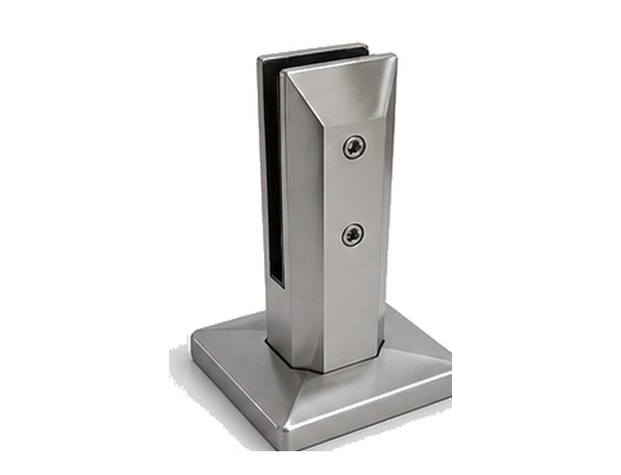
Glasstütze
Stabile Stütze mit Bodenplatte — sichere Befestigung, auch bei höherer Belastung.
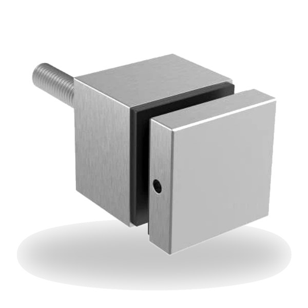
Glasadapter (eckig)
Eckiger Punkthalter für die Glasbefestigung — klare, kompakte Form.
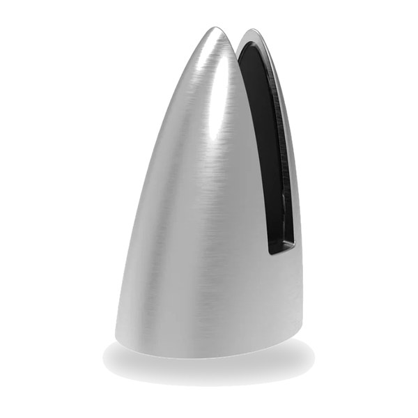
Glasstütze konisch
Konische Stütze mit markanter Form — ein moderner Blickfang.
Einsatzgebiet
Zuhause in Wien, unterwegs in ganz Österreich
Unser Standort ist Wien — Aufmaß, Lieferung und Montage übernehmen wir jedoch österreichweit, egal ob Wien, Niederösterreich, Oberösterreich, Steiermark, Tirol, Salzburg, Kärnten, Vorarlberg oder Burgenland.
FAQ
Häufige Fragen
Das Wichtigste rund um Ihr Glasgeländer — kurz beantwortet.
Was kostet ein Glasgeländer?
Der Preis hängt von Länge, Glasart (ESG oder VSG), Glasfarbe und Beschlagsystem ab. Nach einem kostenlosen Aufmaß erhalten Sie eine genaue, unverbindliche Berechnung für Ihr Projekt.
Wie lange dauert es von der Anfrage bis zur Montage?
Die Standard-Lieferzeit beträgt 3–5 Wochen vom Aufmaß bis zur fertigen Montage. Auf Anfrage ist eine Express-Fertigung in 1–2 Wochen möglich.
ESG oder VSG — welches Glas brauche ich?
Beide sind geprüfte Sicherheitsgläser. VSG (Verbund-Sicherheitsglas) empfehlen wir bei höheren Absturzhöhen, da es im Bruchfall in der Folie hält. Beim Aufmaß beraten wir Sie zur passenden Wahl.
Übernehmt ihr auch Aufmaß und Montage?
Ja — Aufmaß, Fertigung, Lieferung und Montage kommen bei uns aus einer Hand. Sie haben einen Ansprechpartner für den gesamten Prozess.
Welche Glasfarben gibt es?
Sie haben die Wahl aus 7 Farben: Klar, Extraklar, Satiniert, Bronze, Grau, Anthrazit und Schwarz — von komplett transparent bis blickdicht.
In welchen Regionen seid ihr tätig?
Wir sind in ganz Österreich für Sie unterwegs — Wien, Niederösterreich, Oberösterreich, Steiermark, Salzburg, Tirol, Kärnten, Vorarlberg und Burgenland.
Ist die Berechnung kostenlos?
Ja. Aufmaß und Angebot sind für Sie kostenlos und unverbindlich. Fordern Sie einfach Ihre Berechnung über das Formular an.
Kontakt
Kostenlose Berechnung anfordern
Füllen Sie das Formular aus — Sie erhalten von uns eine unverbindliche Berechnung für Ihr Glasgeländer.